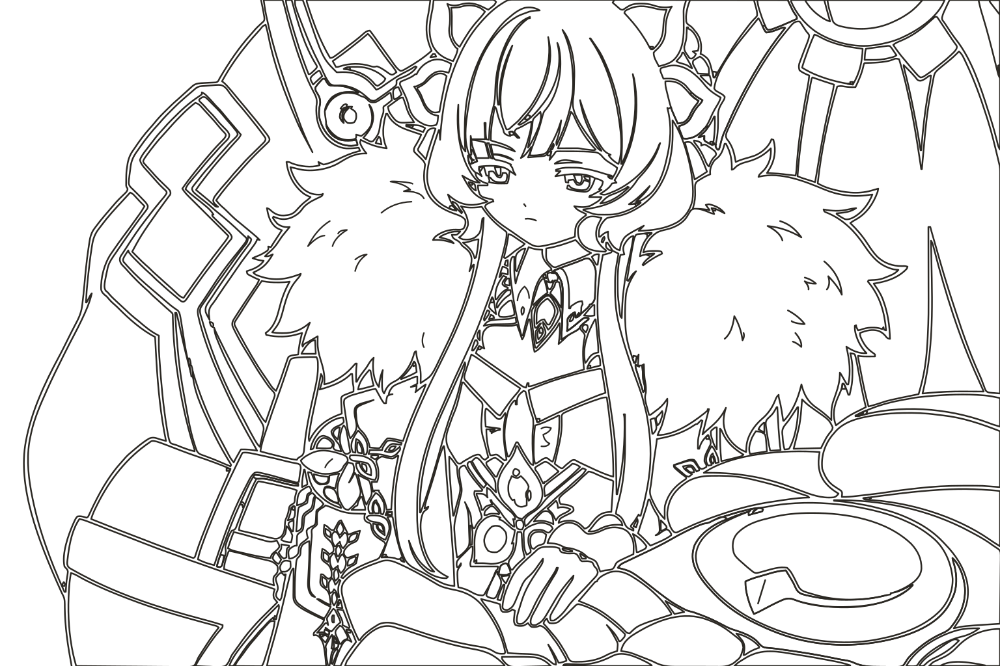

v4 以 v2 方案 D 为底：线稿贴齐刊号下缘和 SCROLL 上缘，图注叠在线稿上，中缝约在画面 46% 处。 v2 v1
GrunRay/个人刊
VOL.2026 · NO.46 · 2026/11/11
WORDS, WORKS & WANDERINGS
05 / 开卷
欢迎来到我的个人刊。这本杂志，一直在写。

读写之间，来日方长。
SCROLL · 下读
PERSONAL WIKI / EST. 2026
COVER STORY · 封面故事